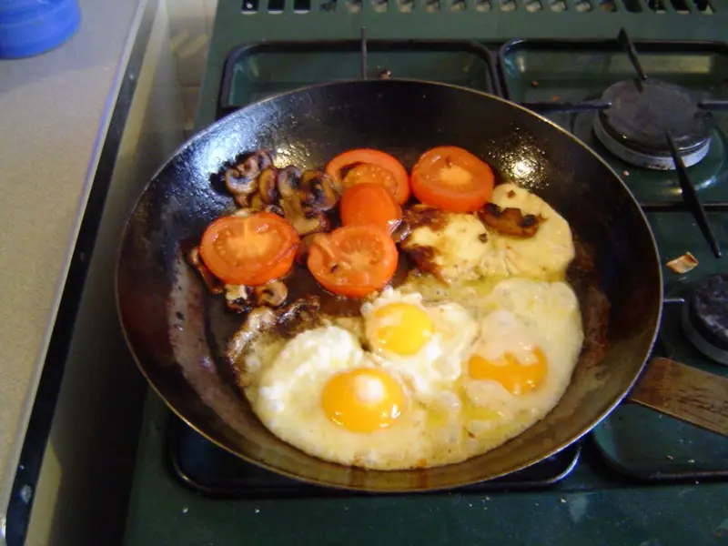

Фото: Gordon Joly, CC BY-SA 3.0

Яичница-глазунья с помидорами
Глазунья на обжаренных кружках помидоров за 10 минут
10 мин2 порц.243 ккал на порциюБ 15 · Ж 18 · У 5Интернациональная кухня
Продукты на 2 порц.
- Яйцо куриное4 шт
- Помидоры2 шт
- Растительное масло1 ст. л.
- Соль1 щеп.
- Перец чёрный молотыйпо вкусу
- Зелёный лук по желаниюпо вкусу
Как готовить
- Помидоры нарежьте кружками толщиной 1 см.
- Разогрейте масло на сковороде на среднем огне 1 минуту.
- Выложите помидоры и обжарьте 2 минуты, переверните.
- Аккуратно разбейте яйца поверх помидоров, стараясь не повредить желтки.
- Посолите белок, поперчите. Жарьте на среднем огне 3-4 минуты, пока белок не станет полностью белым и плотным.
- Посыпьте зелёным луком и сразу подавайте.
Совет. Солите только белок: соль на желтке оставляет белые пятна. Чтобы верх белка схватился быстрее, накройте сковороду крышкой на последнюю минуту.